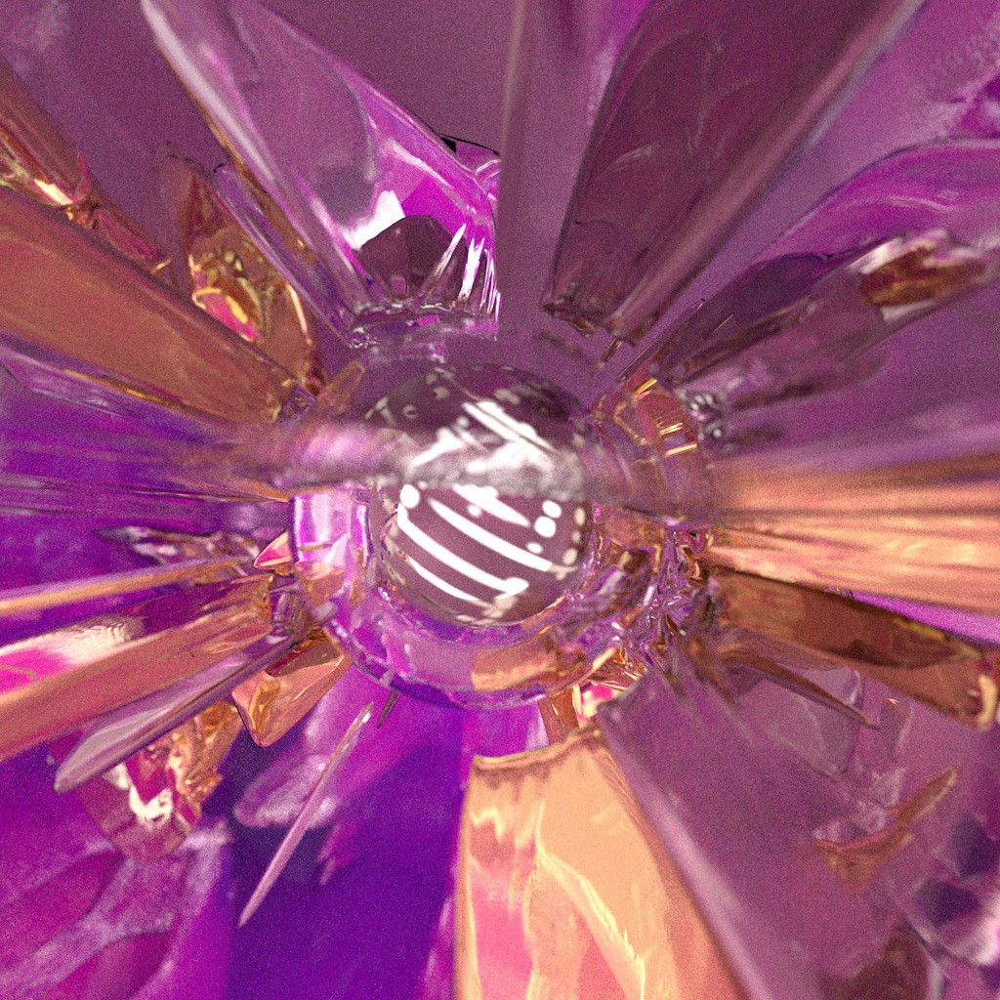

Induced Entities
Word to world.
Induced entities is a continuous project that explores a mixture of technologies in order to create an artificial response device. taking passages of english text the process follows a set of non-arbitrary decisions to create a unique environment. this is not an interpreter or translator between one medium to another. rather this system attempts to mimic the noisy, low-fi, emotional response that we experience from various stimuli.
Just as we always experience within a context, the process draws upon the conditions that it finds itself in.
Functionally each text input produces a large variety of media in order to achieve the final, composed, environment. images are generated to provide colour and light reference, models are produced to fill the environment, and a unique description of an environment is created in order to bring all the parts together.